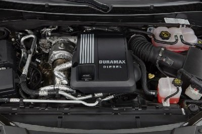
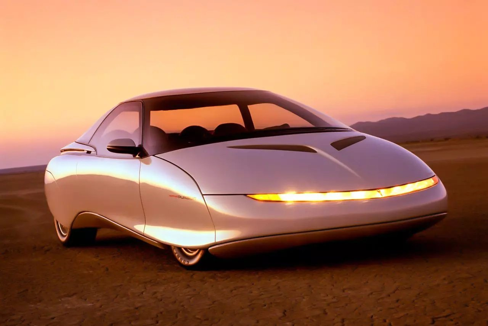
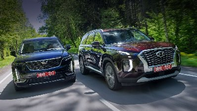
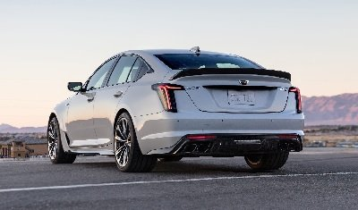
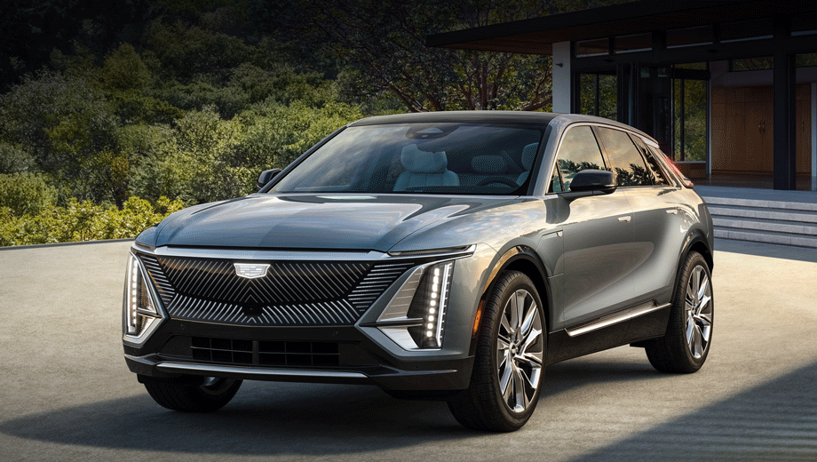
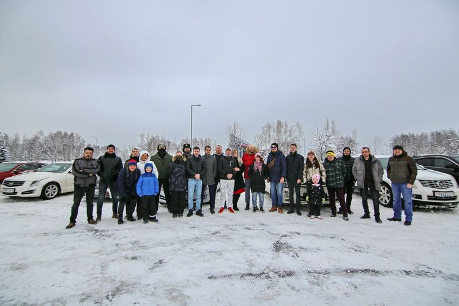
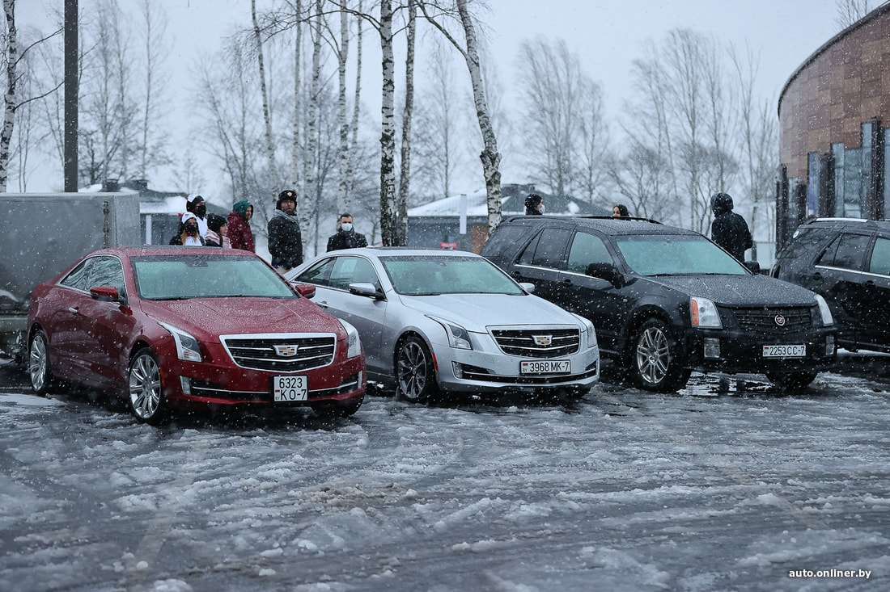
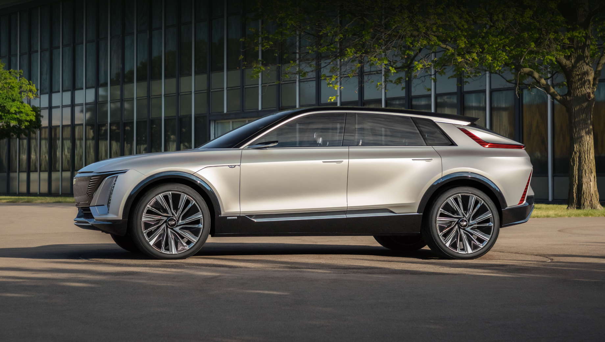

НОВОСТИ CADILLAC
НОВОСТИ CADILLAC, новости кадиллак Escalade SRX XT5 CTS CT6 CTS-V

Cadillac вернётся в Ле-Ман через два года с новым гиперкаром
Американская марка присоединится к чемпионату мира по гонкам на выносливость Компания Cadillac намерена вернуться в суточный марафон «24 часа Ле-Мана» серии FIA World Endurance Championship в 2023 году. Марка присоединится к классу Le Mans Daytona Hybrid (LMDh) и продолжит участие в американской серии IMSA WeatherTech SportsCar Championship, которую она выигрывала в 2017 и 2018 годах, а также...

Внедорожники и пикапы GM с турбодизелем Duramax LM2 недоступны к заказу Американский концерн General Motors (GM) остановил продажи дизельных внедорожников и пикапов Cadillac Escalade, Chevrolet Tahoe/Subarban/Silverado 1500 и GMC Yukon/Sierra 1500. Официальные дилеры GM получили письмо, датированное 27 августа, в котором сказано, что шестицилиндровые моторы Duramax LM2 оказались в...
General Motors остановил продажи дизельных Cadillac и Chevrolet
Внедорожники и пикапы GM с турбодизелем Duramax LM2 недоступны к заказу Американский концерн General Motors (GM) остановил продажи дизельных внедорожников и пикапов Cadillac Escalade, Chevrolet Tahoe/Subarban/Silverado 1500 и GMC Yukon/Sierra 1500. Официальные дилеры GM получили письмо, датированное 27 августа, в котором сказано, что шестицилиндровые моторы Duramax LM2 оказались в...

Убийца суперкаров, «кентавр» из будущего, внедорожный хайтек-минивэн и другие забытые эксперименты За свою 112-летнюю историю империя General Motors знала грандиозные взлеты и сокрушительные нокдауны, создавала культовые модели и ставила точку в судьбе своих брендов. Захватывающие страницы биографии GM связаны с шоу-карами. Многие из них забыты, другие неизвестны широкой аудитории. Жаль, ведь техника...
Поразительные концепт-кары General Motors
Убийца суперкаров, «кентавр» из будущего, внедорожный хайтек-минивэн и другие забытые эксперименты За свою 112-летнюю историю империя General Motors знала грандиозные взлеты и сокрушительные нокдауны, создавала культовые модели и ставила точку в судьбе своих брендов. Захватывающие страницы биографии GM связаны с шоу-карами. Многие из них забыты, другие неизвестны широкой аудитории. Жаль, ведь техника...

Palisade с V6 стоит минимум 3 599 000 рублей. Тестовая комплектация High-Tech даже без накруток оценена в 4 129 000 (плюс 20 тысяч за «металлик»). Cadillac XT6 в базовом исполнении Premium Luxury обойдётся в 4 850 000, но пакет Platinum и система ночного видения добавляют 680 тысяч. В доковидную эпоху кроссоверы Hyundai Palisade и Cadillac XT6 вряд ли встретились бы в сравнительном тесте. Но дефицит и дилерская...
Тест-драйв: Оцениваем Hyundai Palisade с уровня кроссовера Cadillac XT6
Palisade с V6 стоит минимум 3 599 000 рублей. Тестовая комплектация High-Tech даже без накруток оценена в 4 129 000 (плюс 20 тысяч за «металлик»). Cadillac XT6 в базовом исполнении Premium Luxury обойдётся в 4 850 000, но пакет Platinum и система ночного видения добавляют 680 тысяч. В доковидную эпоху кроссоверы Hyundai Palisade и Cadillac XT6 вряд ли встретились бы в сравнительном тесте. Но дефицит и дилерская...

Серию Blackwing выдают более крупные воздухозаборники и развитое углепластиковое оперение, включая огромный спойлер на крышке багажника. Кованые алюминиевые колёса на CT4 обуты в шины Michelin Pilot Sport 4S размерностью 255/35 ZR18 спереди и 275/35 ZR18 сзади. Презентации моделей Cadillac CT4-V и CT5-V с приставкой Blackwing пришлось ждать больше года, но теперь гештальт закрыт. От обычной V-серии подзадержавшиеся из-за...
Правильная V-серия CT4/CT5 получила знакомые моторы 3.6TT и 6.2 Supercharged
Серию Blackwing выдают более крупные воздухозаборники и развитое углепластиковое оперение, включая огромный спойлер на крышке багажника. Кованые алюминиевые колёса на CT4 обуты в шины Michelin Pilot Sport 4S размерностью 255/35 ZR18 спереди и 275/35 ZR18 сзади. Презентации моделей Cadillac CT4-V и CT5-V с приставкой Blackwing пришлось ждать больше года, но теперь гештальт закрыт. От обычной V-серии подзадержавшиеся из-за...

От прототипа, показанного в августе, товарный Lyriq отличается привычными наружными зеркалами и нюансами декора, например, полосатыми вставками в переднем бампере. Размеры: 4996×1977×1623 мм, колёсная база — 3094, шины — 265/50 R20 либо 275/40 R22. Большой электрический кроссовер Cadillac Lyriq дебютировал 21 апреля как серийная модель с завода в Спринг-Хилле, штат Теннесси. Начальная цена — $59 990 (4,6 млн рублей). Заказы от американцев...
Cadillac Lyriq на старте продаж будет оснащен только задним приводом
От прототипа, показанного в августе, товарный Lyriq отличается привычными наружными зеркалами и нюансами декора, например, полосатыми вставками в переднем бампере. Размеры: 4996×1977×1623 мм, колёсная база — 3094, шины — 265/50 R20 либо 275/40 R22. Большой электрический кроссовер Cadillac Lyriq дебютировал 21 апреля как серийная модель с завода в Спринг-Хилле, штат Теннесси. Начальная цена — $59 990 (4,6 млн рублей). Заказы от американцев...

Ежегодно в начале января сообщество фанатов Cadillac в Беларуси — Cadillac Team By — отмечает день рождения! Вчера, 10 января, владельцы люксовых американских автомобилей собрались в Минске. Погода, конечно, внесла свои коррективы: на слет приехали далеко не все участники белорусского клуба — всего было 17 обладателей таких моделей, как CTS, SRX и Escalade.
Cadillac Team Belarus - 3 года! Встреча в Минске 01.10.2021
Ежегодно в начале января сообщество фанатов Cadillac в Беларуси — Cadillac Team By — отмечает день рождения! Вчера, 10 января, владельцы люксовых американских автомобилей собрались в Минске. Погода, конечно, внесла свои коррективы: на слет приехали далеко не все участники белорусского клуба — всего было 17 обладателей таких моделей, как CTS, SRX и Escalade.

Суровая погода не помешала белорусским любителям Cadillac собраться вчера в Минске и провести последнюю в 2020-м встречу. Наш фотограф тоже побывал на слете. На мероприятие прибыло порядка 12 машин. Немного. Но и речь идет не о Polo Sedan. Увидеть одновременно 10 «Кадиллаков» в Беларуси можно только на подобных клубных встречах. Когда-то давно клуб Cadillac Belarus отпочковался от российского...
Премиум по-американски. Встреча клуба Cadillac Team в Минске
Суровая погода не помешала белорусским любителям Cadillac собраться вчера в Минске и провести последнюю в 2020-м встречу. Наш фотограф тоже побывал на слете. На мероприятие прибыло порядка 12 машин. Немного. Но и речь идет не о Polo Sedan. Увидеть одновременно 10 «Кадиллаков» в Беларуси можно только на подобных клубных встречах. Когда-то давно клуб Cadillac Belarus отпочковался от российского...

"Cadillac Takeover 2020" часть 2
Вторая часть про большую встречу владельцев Cadillac CTS-V в Америке

Электрический кроссовер Cadillac Lyriq был показан в августе как прототип «серийный на 85%». Батарея на 100 кВт•ч обеспечит машине пробег на зарядке «свыше 300 миль» (482 км). В рамках общей стратегии GM по электрификации моделей марка Cadillac постепенно может перейти к выпуску только электрокаров. Но пока речь идёт лишь о единичных моделях. А начнёт трансформацию паркетник Lyriq. Чтобы подготовить его продажи, компания Cadillac...
Cadillac потеряет шестую часть дилеров из-за электрокаров
Электрический кроссовер Cadillac Lyriq был показан в августе как прототип «серийный на 85%». Батарея на 100 кВт•ч обеспечит машине пробег на зарядке «свыше 300 миль» (482 км). В рамках общей стратегии GM по электрификации моделей марка Cadillac постепенно может перейти к выпуску только электрокаров. Но пока речь идёт лишь о единичных моделях. А начнёт трансформацию паркетник Lyriq. Чтобы подготовить его продажи, компания Cadillac...